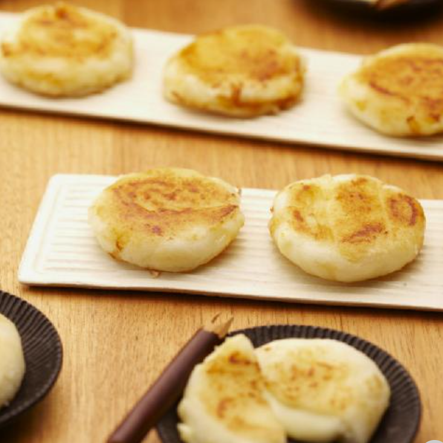

チーズいももち

材料（10個分）
- じゃがいも ... 2と1/2個
- 片栗粉 ... 大さじ3
- クラフトスライスチーズ... 5枚
- サラダ油... 適量
- しょうゆ... 大さじ1
作り方（調理時間:30分/目安）
- じゃがいもは一口大に切ってゆで、熱いうちにつぶして片栗粉を加え、粉っぽさがなくなるまで混ぜ、10等分にします。
- チーズは4等分にし、2枚ずつ重ねます。
- ①を各々2つに分けて平たい円形にし、チーズが中心にくるようにはさんで形をととのえます。【☝ポイント参照】フライパンにサラダ油を熱し両面こんがり焼きます。刷毛等で両面にしょうゆを塗ります。
提供
森永乳業